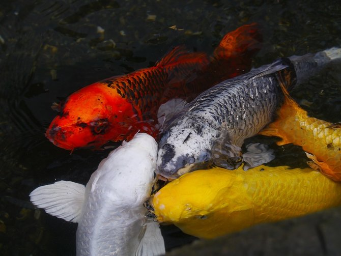

Ikan Koi
Salah satu jenis ikan hias yang populer dari waktu ke waktu adalah ikan koi. Ikan koi pertama kali diperkenalkan di Jepang pada tahun 1920-an. Ikan koi termasuk hasil persilangan dari beberapa jenis ikan mas dengan warna putih dan merah.
Jenis ikan hias ini sangat populer di kalangan pecinta ikan hias akuarium. Namun, biasanya orang memelihara ikan koi ini di dalam kolam. Ikan koi bisa tumbuh mencapai ukuran yang besar dan biasanya memiliki warna-warna yang sangat cantik yang bisa membuatnya menjadi sangat mahal jika diperjual belikan.
Perawatan
Cara budidaya ikan koi yang pertama yakni, menyiapkan kolam ikan terlebih dahulu Kamu bisa menggunakan material apapun untuk membuat kolam, namun pastikan kedalaman minimalnya 50 cm. Akan lebih baik jika kamu membuatnya hingga 1 meter, agar dapat menampung air sebanyak 1100 liter untuk setiap ikan. Untuk lebar kolam tak ada ukuran pasti, yang penting pastikan ikan memiliki ruang gerak yang cukup. Sehingga ia dapat tumbuh dengan baik dan sehat. Untuk pengisian pertama, jangan langsung memasukkan ikan bersama air. Rendam terlebih dahulu kolam selama beberapa hari sebelum diisi ikan. Ini penting, untuk menghindari ikan mati akibat senyawa kimia yang mungkin menempel di permukaan kolam. Setelah kurang lebih seminggu, kuras air untuk merendam kolam tersebut dan ganti dengan air baru. Uji kondisinya dengan meletakkan satu ikan terlebih dahulu, jika aman baru masukkan ikan lainnya satu persatu.
Saat budidaya ikan koi, penting untuk selalu menjaga kualitas air yang diguna Hal ini bisa kamu lakukan dengan memasang filter air. Sistem filter akan menyaring kotoran halus dan mengurai racun ammonia sisa proses pencernaan ikan.Dengan cara merawat ikan koi satu ini, kebersihan air kolam bisa selalu terjaga. Ketika memilih bibit ikan, jangan tergoda dengan harga yang murah. Hal ini karena, aspek terpenting berikutnya dalam budidaya ikan koi adalah, bibit yang sehat Ikan sehat hanya perlu waktu beberapa hari untuk menyesuaikan diri dengan kolam baru. Sementara ikan tak berkualitas, justru akan merepotkanmu atau bahkan mati.
Cara merawat ikan koi berikutnya yakni, lengkapi kolam dengan tanaman air.Tanaman yang tumbuh di kolam bisa menjadi sumber nutrisi alami untuk ikan.Misalnya saja seperti tanaman alga atau duckweed.Tentu saja, tanaman air juga akan menjadi poin estetika tambahan di kolammu. Pilih pelet berkualitas untuk ikan kesayanganmu. Tak hanya itu, beri asupan tambahan dengan pelet yang mengandung protein tinggi. Yakni, pelet dengan kandungan protein lebih dari 30 persen dan kandungan lemak sekitar 5 persen. Sebelum memberinya pada ikan, rendam dulu pelet di air selama 30-60 detik. Agar pelet lebih mudah dicerna dan tak menyumbat saluran pencernaannya.